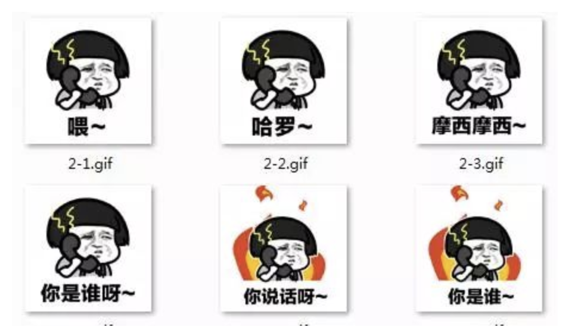
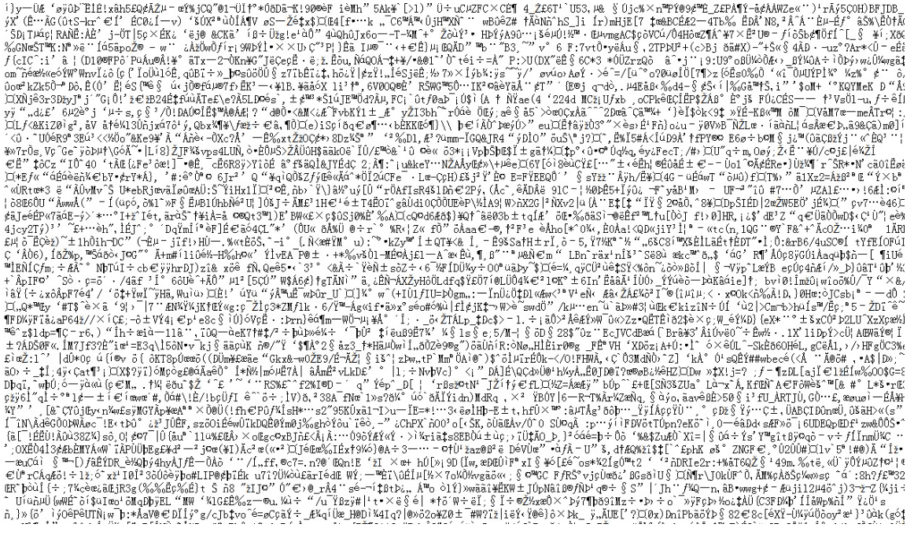
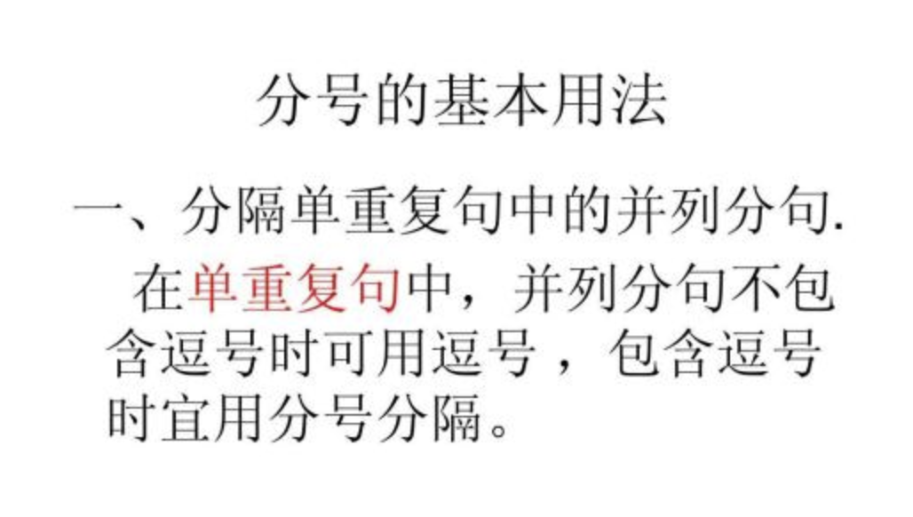

1024程序员节，请用一句话证明你是一个程序员！原文出处:本文由博客园博主Python知识圈提供。
原文连接:https://www.cnblogs.com/pythoncircle/p/11731684.html
随着大家学习的热情越来越高涨，所以很多技术交流群就应约而生了，大家希望在群里能学到技术（其实主要是吹牛逼）。随着群的壮大，自然就吸引了羊毛党的注意，为了防止这批人进群，我曾经也是想破了脑袋，最后想出了一道非常简单的编程题。
print(1==2)
结果还真的考住了一批人。
直到有一天，女朋友提醒我，你这题是 Python 的，万一想学习的小白没接触过 Python，只学过 PHP 呢，那不就打击了别人的学习热情？我给你出个主意，就是让大家用一句话证明自己是程序员。
这个主意好啊。
喂，醒醒，你还没有女朋友！
那么，怎么用一句话证明你是一个程序员？（以下部分答案手机于网络）
“没有对象，我就自己NEW一个”。
“我不是修电脑的”
“你说第一句? 从0算起还是从1算起”
“Hello，World”

“PHP不是世界上最好的语言，JAVA才是”
“CAO，没同步就覆盖了”
“我头发白了，但我才十八岁”
“UTF-8还是GBK?”

我们从不生产BUG，我们是BUG的搬运工
曾几何时，我也是满头秀发…
老板凑个整数吧，1024
不管写什么，没事在后面加个分号;

你怎么用一句话证明你是一个程序员？评论区告诉我答案哦
关注微信公众号 Python知识圈 ，获取更多 Python 精彩内容。